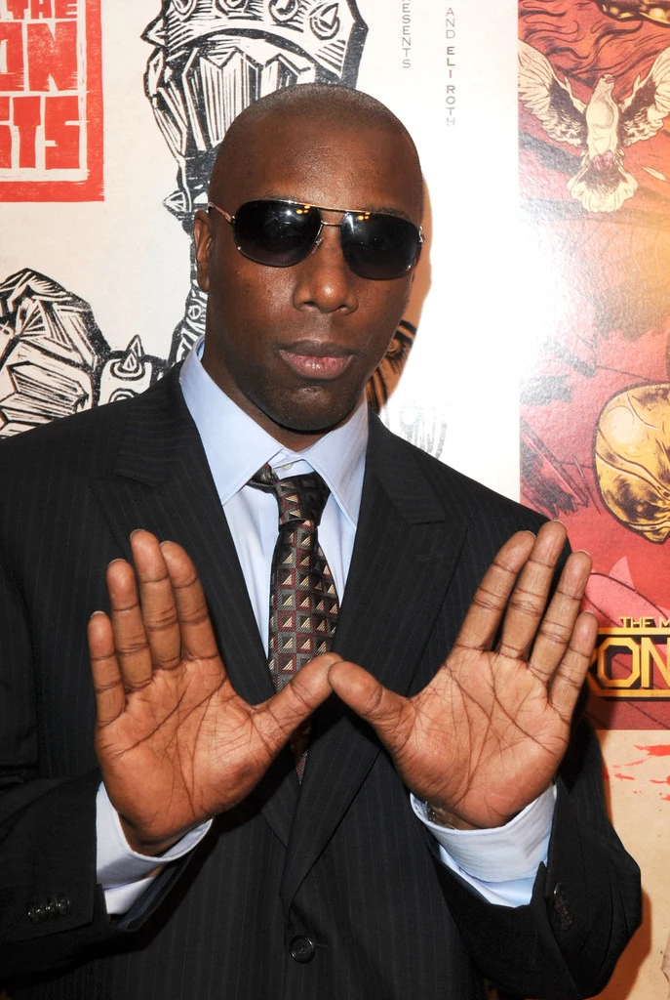

Inspectah Deck, or Jason Hunter, is another influential rapper of Wu-Tang Clan. Assuming a modest and mysterious persona as the “Inspectah,” Hunter was featured on early albums as a lyrical balance to the high-energy chaos of the other members. Inspectah Deck attempted to begin a solo career with his debut album Uncontrolled Substance and later album The Movement, but lack of commercial appeal halted his desire to continue solo.
Since 2010, Inspectah Deck has been primarily working on the project Czarface, teaming up with rappers 7L and Esoteric and producer DJ Premier. Czarface’s prominence peaked in 2018 with his collaboration with underground phenom MF DOOM on their album Czarface Meets Metal Face, reaching number one on the US Heatseeker charts.